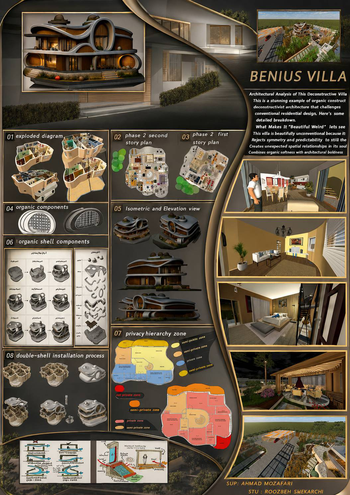
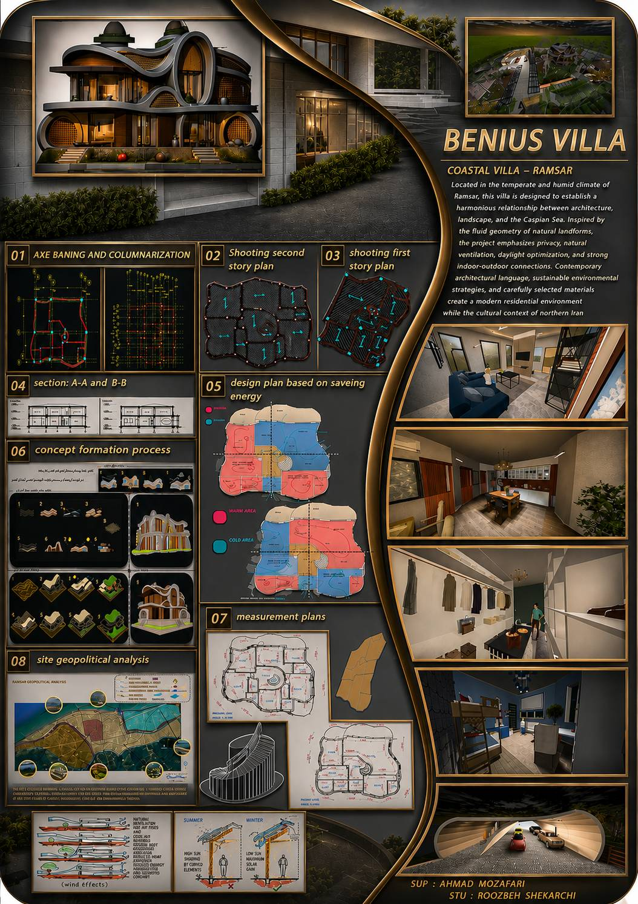
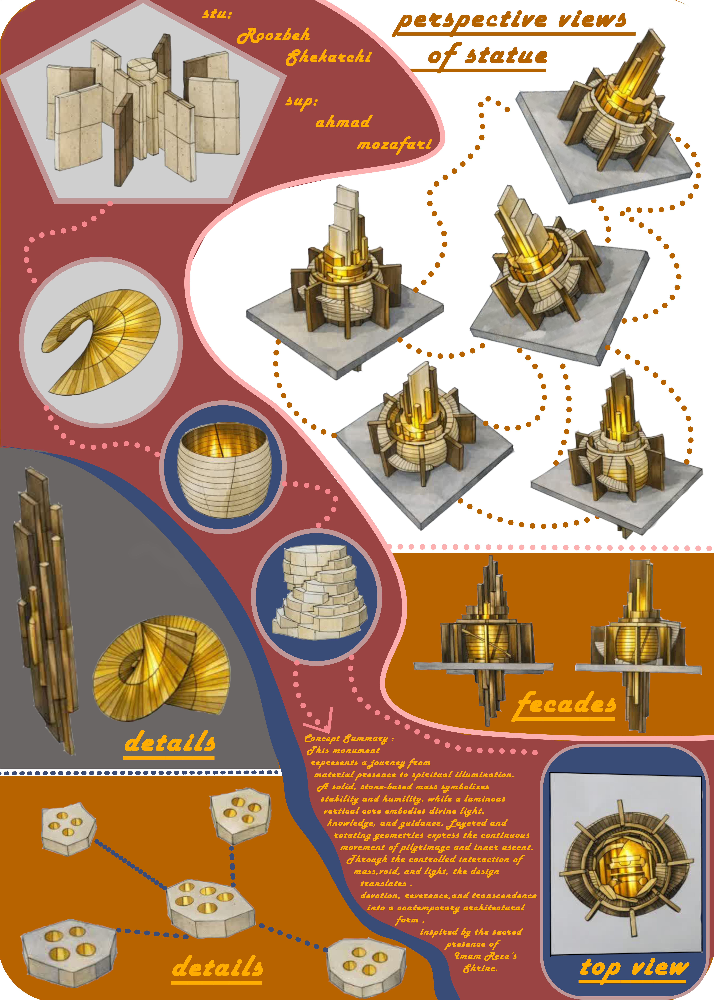
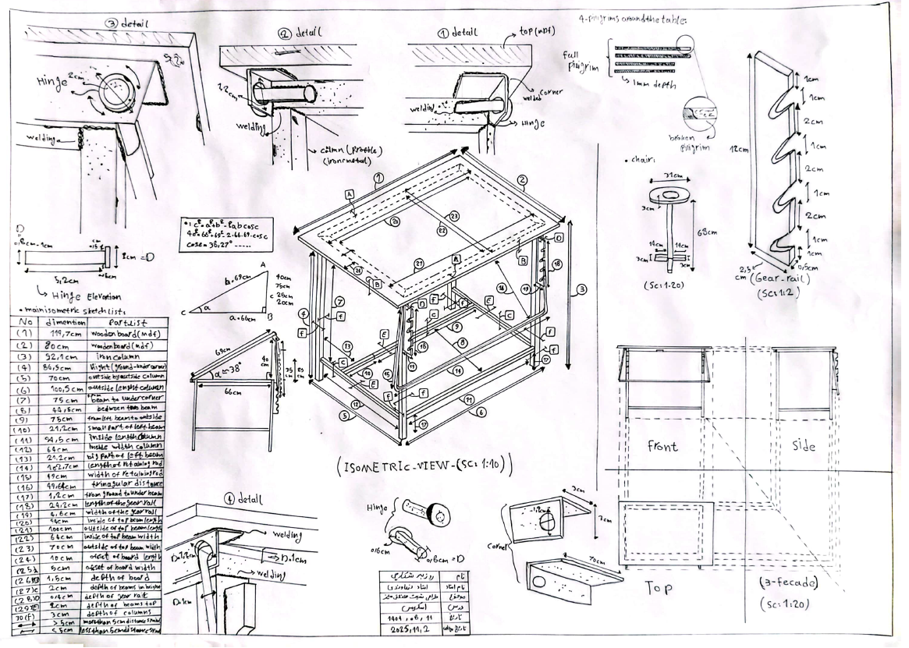
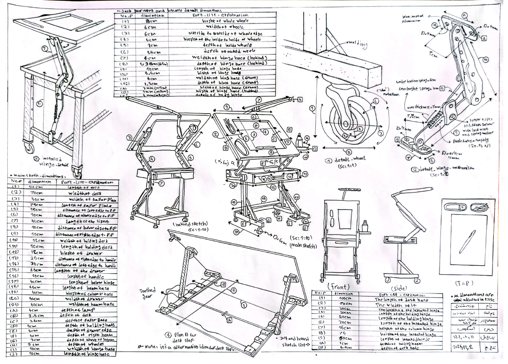
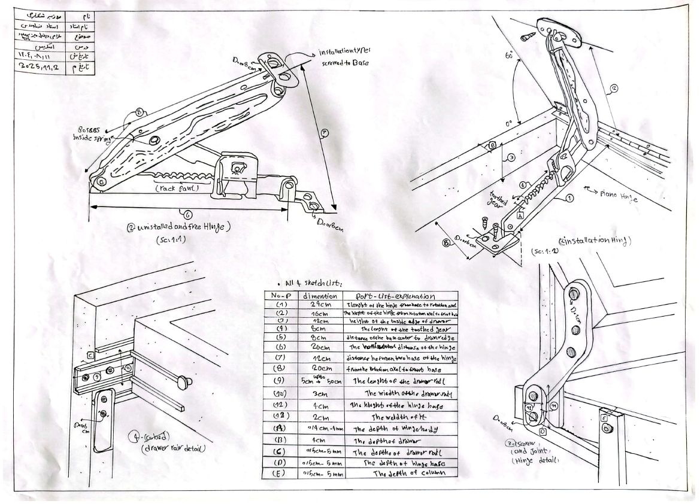
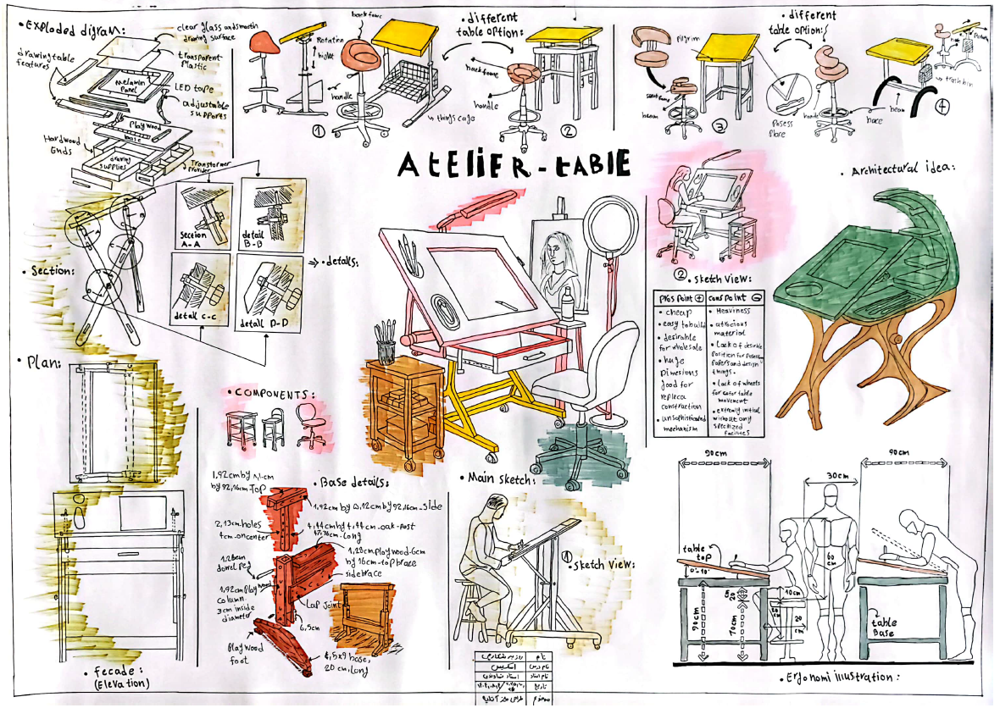
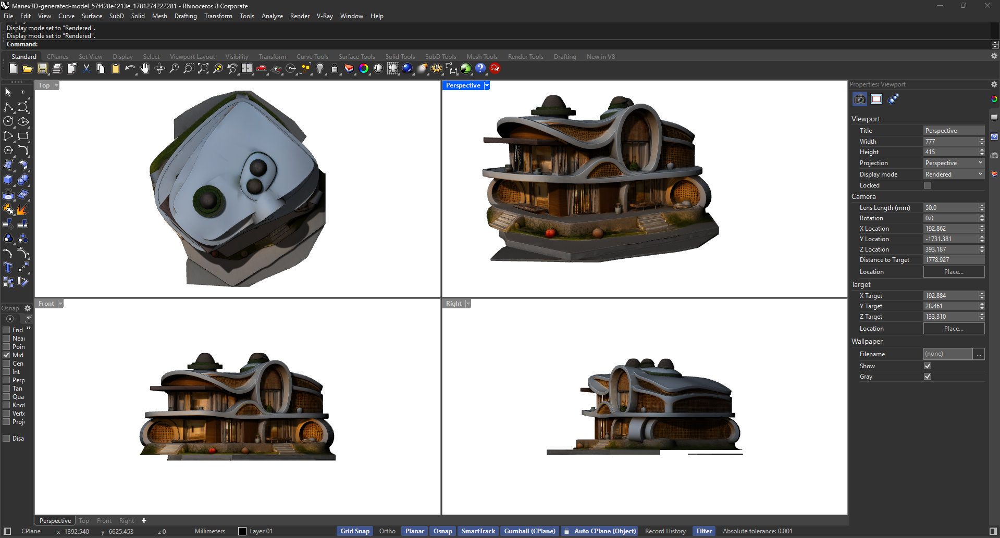

I’m Roozbeh Shekarchi, a 21-year-old third-year Bachelor of Architecture student at the University of Tehran. I am continuously learning and developing my knowledge in architecture, with the long-term goal of pursuing advanced academic studies and taking my education to the highest levels. My interests and experience include architectural design, 3D modeling, and the development of landscapes, green spaces, villas, apartments, towers, and technical architectural elements. I explore culture, society, concepts, ideas, climate, form, and contextual inspiration to develop thoughtful and creative architectural solutions. Alongside architecture, I enjoy programming, graphic design, sports, and creative activities. I also have a strong interest in films, series, and music, which I regularly explore and follow as sources of inspiration and personal enjoyment.
See more3D Design & Visualization Developing architectural models and visualizations with professional software, building practical skills through academic projects and personal practice. Architectural Sketching & Concept Development Exploring architectural ideas through freehand sketches and early-stage concepts, strengthening creativity and design thinking. Programming & Computational Design Building skills in web development, game design, and Python scripting in Rhino to transform digital concepts into creative forms and interactive experiences.
I specialize in architectural and 3D design, using industry-standard software such as Rhino, 3ds Max, Revit, AutoCAD, Photoshop, and Live Home 3D I create detailed 3D models, architectural designs, visualizations, and presentation-ready graphics with a strong focus on precision and creativity.
I develop initial architectural concepts through freehand sketching, exploring ideas and design possibilities from the earliest stages of a project. My sketches help transform conceptual ideas into clear visual forms, establishing the foundation for the design process from the early conceptual phase.
I work across web development and game design, combining programming with creative and interactive design. I also use Python scripting in Rhino to develop computational and parametric forms, transforming algorithms and digital concepts into complex three-dimensional geometries.

3D Modeling & Visualization

3D Modeling & Rendering

Computational Design with Rhino & Python

Initial Concept & Freehand Sketching

Initial Concept & Freehand Sketching

Creative 3D Details

3D Design - ART

Architectural Exploration & Development
3D Modeling & design